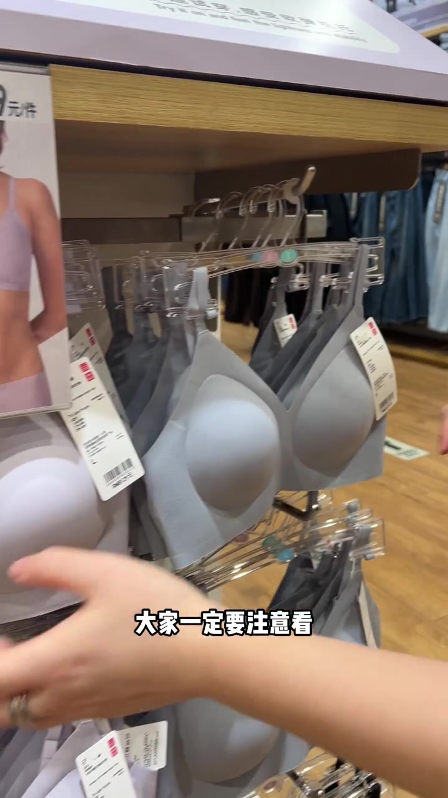
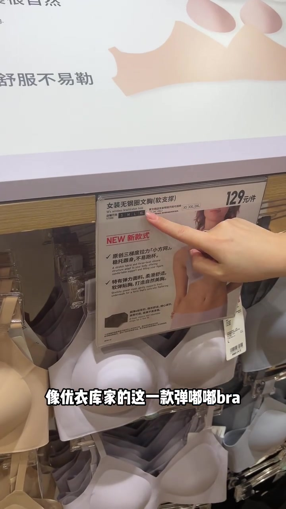
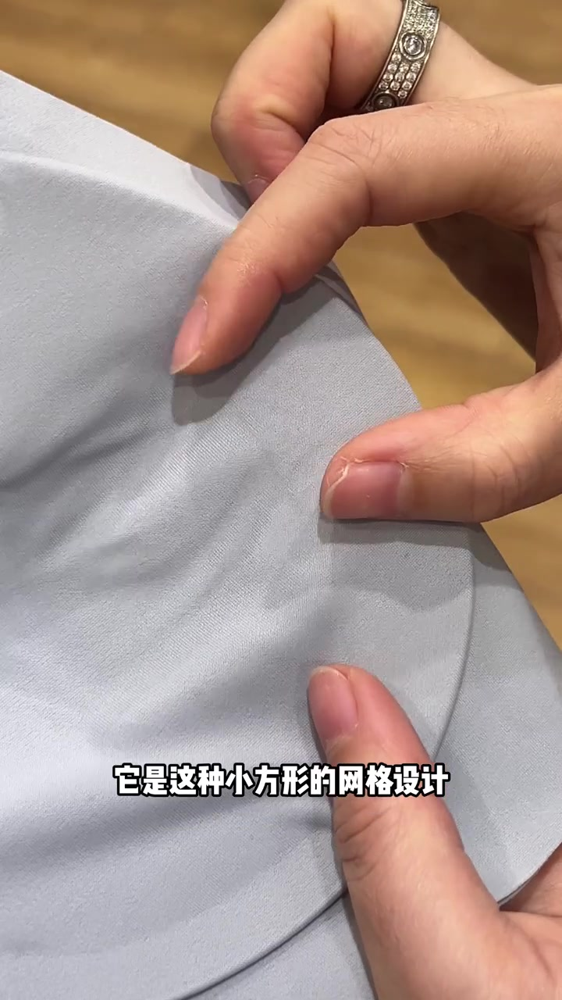
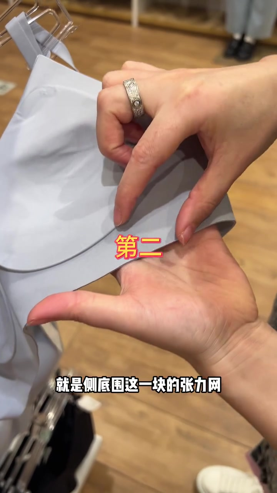
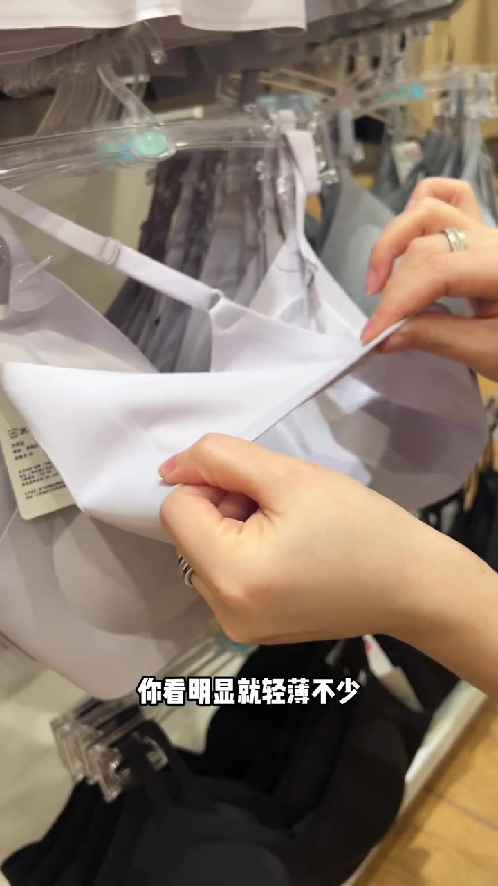
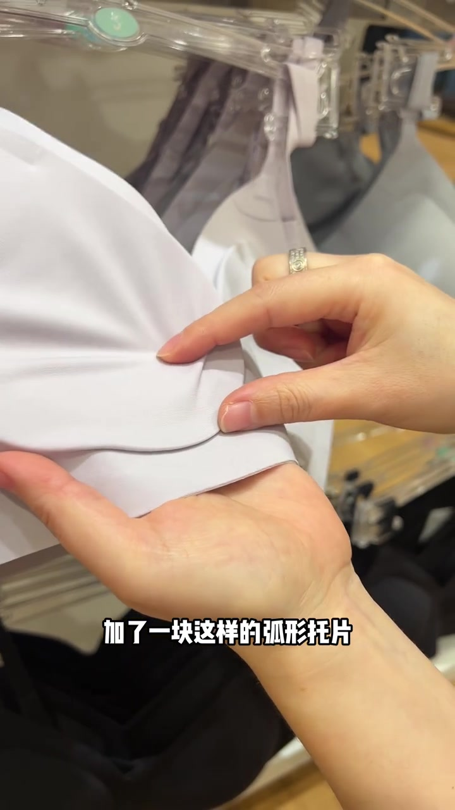
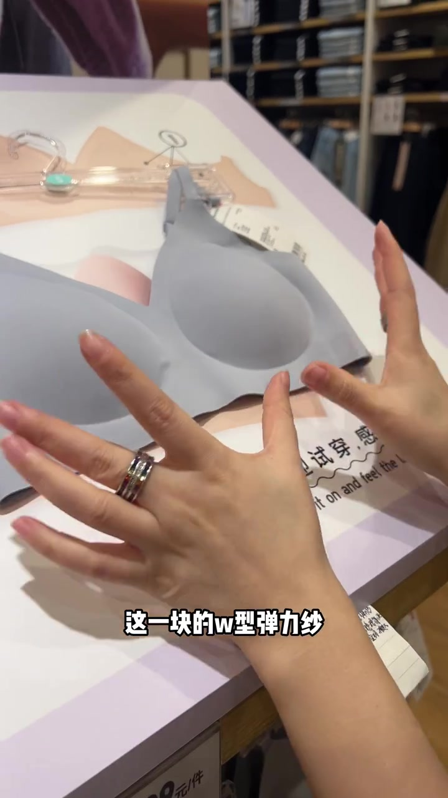
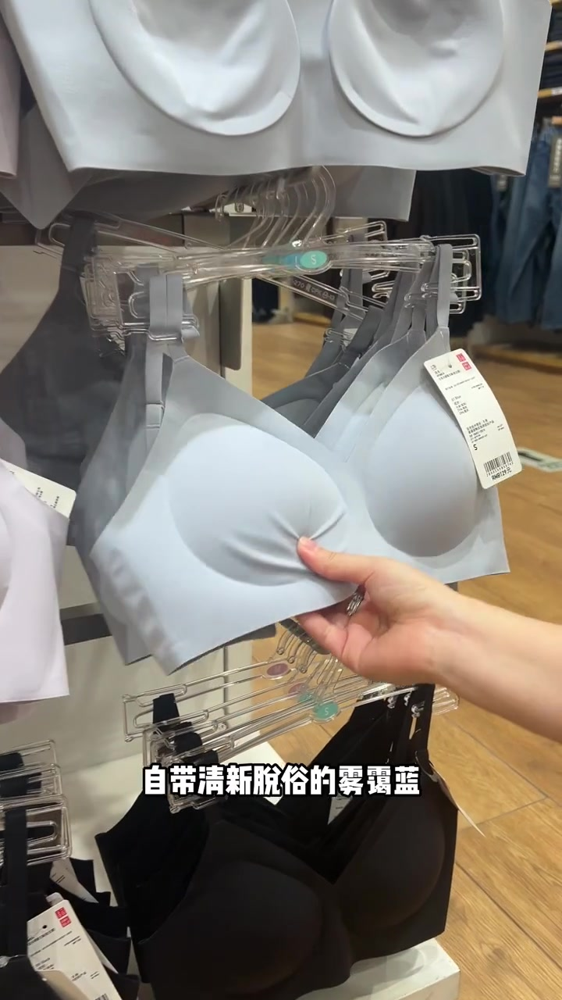

开场：无钢圈也要先看支撑性设计
镜头先扫过优衣库内衣挂架上的灰色、浅色无钢圈文胸，手伸向货架。字幕提醒选无钢圈内衣时，“大家一定要注意看”支撑性设计够不够——一旦跟不上，就容易出现空杯、跑杯、不贴合等造型问题。
说明：Whisper 固定按中文识别时，把“无钢圈 / 弹嘟嘟 Bra / 侧底围 / 副乳 / 承托 / W 型弹力纱 / 雾霾蓝 / 奶油色 / 曜石黑”等误识为音近字；下文叙事以可见字幕、货架信息卡与画面为准，文末转录区仍完整保留全部原始分段。

讲述者说不同问题要盯不同位置，随即引入示例：优衣库这一款弹嘟嘟 Bra，“在支撑性上做的就非常到位”。货架信息卡可见「女装无钢圈文胸(软支撑)」、129 元/件、NEW 新款式，以及卖点「原创三梯度拉力『小方网』」与「特有弹力面料，柔滑舒适」。
可见字幕：“像优衣库家的这一款弹嘟嘟 bra，在支撑性上做的就非常到位。”

杯侧小方网：向内收拢，抓住杯垫
第一个位置是杯侧这一块网。讲述者认为，穿内衣总空杯、不贴合，主要和这块设计直接相关。镜头特写雾霾蓝面料，手指捏起细密纹理，字幕写“它是这种小方形的网格设计”。

按她的说法，穿上后这块网能让胸部轻轻向内收拢，并顺着曲线贴合受力，让胸部“牢牢抓住杯垫”，从而既不空杯跑杯，也不轻易偏移走位。
可见字幕校正：“核心的作用就是穿上之后，它能使胸部轻轻的向内收拢……顺着胸部的曲线贴合受力，让胸部牢牢抓住杯垫。”
侧底围张力网：收副乳、集中回正
画面叠出黄色大字「第二」，字幕明确：“就是侧底围这一块的张力网”。她强调无钢圈内衣若这块支撑力不够，副乳容易跑出来，还显得臃肿。

她总结这块的作用“特别实在”：既能牢牢收住副乳，又能从侧边轻轻托住整个胸部、集中回正，让胸部看起来更饱满立体。
可见字幕：“就是侧底围这一块的张力网……既能牢牢的收住副乳，还能从侧边轻轻的托住整个胸部，集中回正。”
背部轻薄网 + 弧形托片杯垫
接下来讲背部的轻薄网。她拉起背片对比，字幕写“你看明显就轻薄不少”——穿紧身衣也难透出痕迹；压胶设计让抬手、弯腰也不容易卷边。

杯垫被说成“专门为嘟嘟杯设计”：在边缘加了一块弧形托片，且是高回弹杯垫，能适配不同胸形、承托力好。日常通勤、久坐办公室或轻运动，都不容易塌杯、跑杯，穿起来更安心。

可见字幕：“在杯垫边缘位置，加了一块这样的弧形托片……都不会出现塌杯、跑杯的不适感，稳稳的托住胸部。”
W 型弹力纱、高弹面料与四色选择
她称“最关键”的是胸围底部这块 W 型弹力纱：支撑性好、自带高回弹，能稳稳承托胸部下缘重量。镜头里文胸躺在「试试穿感」展示板上，字幕写“这一块的 w 型弹力纱”。

面料方面，弹嘟嘟 Bra 整体用高弹面料，摸起来软乎乎、糯叽叽，又带恰到好处的紧实弹力，透气在线——塑形同时舒适度拉满，穿一天也不易闷。细节上，杯垫上下都有固定，机洗与日常穿都不易移位。
收尾讲颜色“老少通吃”：手上这款是清新脱俗的雾霾蓝，还有奶油色、粉底液色，以及曜石黑。价签清晰可见 RMB 129.00、尺码 S。喜欢清新、伪素颜或经典款，都能找到合心意的。

按时间走完的购买清单
这条 2 分 31 秒的货架实录，把无钢圈贴合问题落到可摸可看的位置：杯侧小方网防空杯、侧底围张力网收副乳、背网防透印与卷边、弧形托片杯垫防塌杯、底围 W 纱承托，再以高弹面料与四色收尾。它是优衣库弹嘟嘟 Bra 的现场导购叙事，不是所有胸型或品牌的通用医学结论。